No fim de setembro instalamos na loja uma ferramenta da Microsoft (o Clarity) que registra de forma anônima como as pessoas navegam: até onde rolam a página, onde tocam e em que momento desistem. Analisamos as primeiras 400 visitas. Abaixo estão os quatro pontos que encontramos, com o print de cada um, e no final o que precisamos que você aprove.
Toque em qualquer imagem para abrir em tamanho grande.
Entre 30/09 e 07/10 o Google Analytics da loja registrou este caminho:
A maior perda está na passagem do produto para o carrinho. Por isso os ajustes que propomos são todos na página de produto e no carrinho.
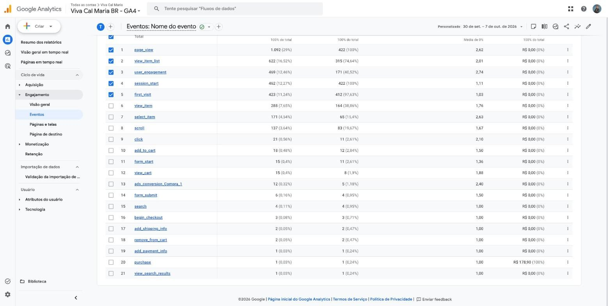
view_item = viu produto (164), add_to_cart = carrinho (12), begin_checkout = pagamento (3), purchase = compra (1).A página /zafu/ é a mais visitada da loja (340 visitas no celular). 49% das pessoas saem antes de rolar um quarto da página, e 72% não passam de 30%. O primeiro produto que elas veem é o Kit Zafu + Zabuton.
O que mais tocam nessa página é a busca e o menu, e não os produtos. A pessoa está procurando alguma coisa e não encontra logo de cara.
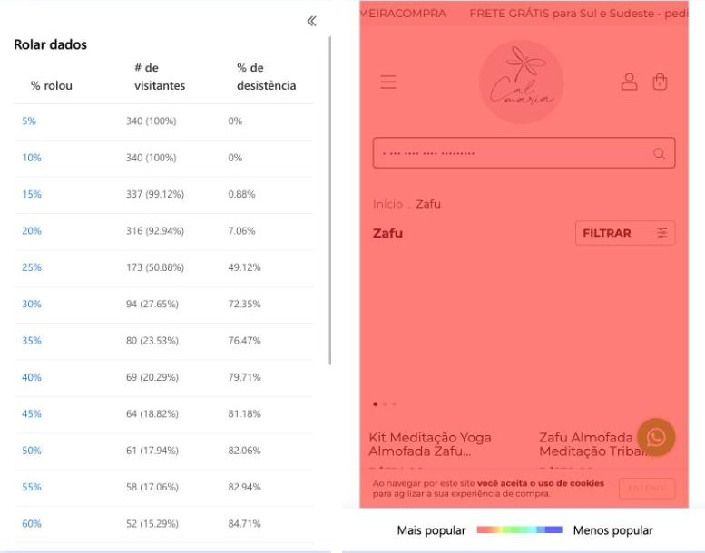
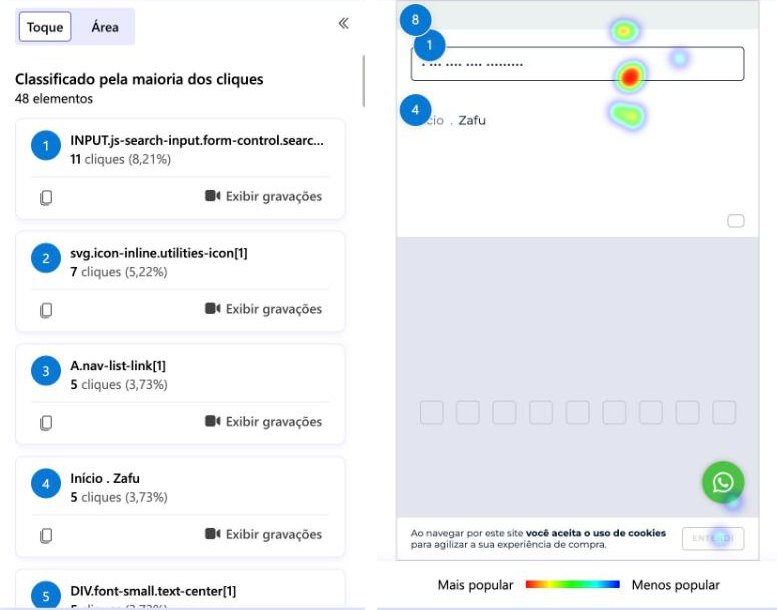
No celular, o topo da loja (faixa de frete, logo, ícones e busca) somado à foto ocupa a tela inteira. O preço e o botão Comprar ficam logo abaixo da primeira tela.
Nas páginas de produto, 40% das visitas terminam antes de chegar a essa altura. Das 310 vezes que alguém tocou em uma página de produto, o botão Comprar recebeu 7 toques. A foto e o logo receberam bem mais.
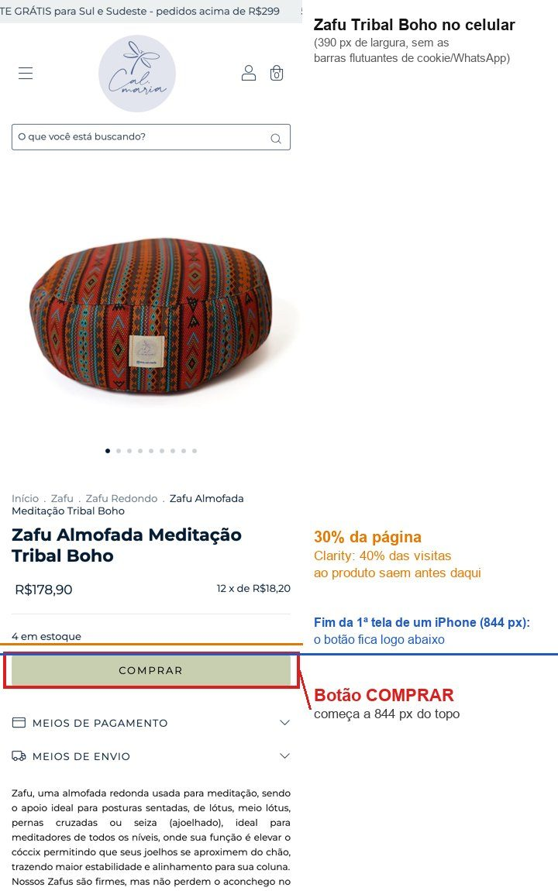
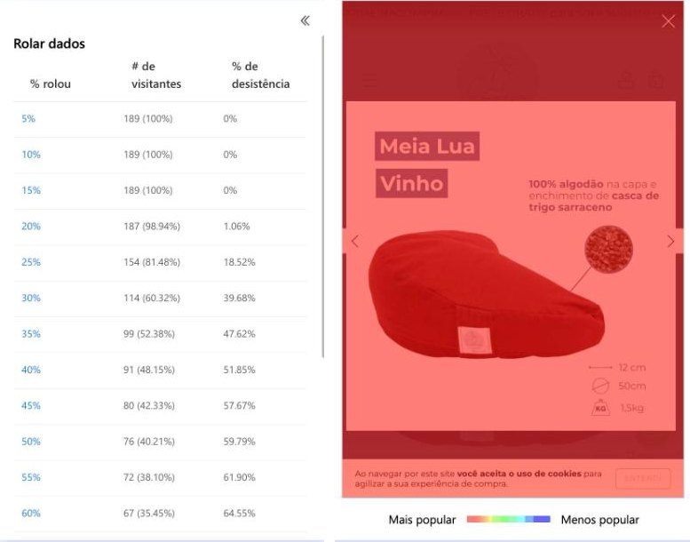
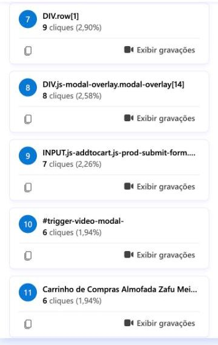
js-addtocart) é o botão Comprar: 7 toques. Os mais tocados são a foto (15 + 15) e o logo (12).O Kit (R$314) é o primeiro produto da página de Zafus e uma das páginas de onde mais saem visitas. A primeira foto mostra o zabuton dobrado como bolsa. Quem chega pelo anúncio não reconhece ali as almofadas de meditação. Numa das gravações, a pessoa abre o Kit e volta para a lista em 8 segundos.
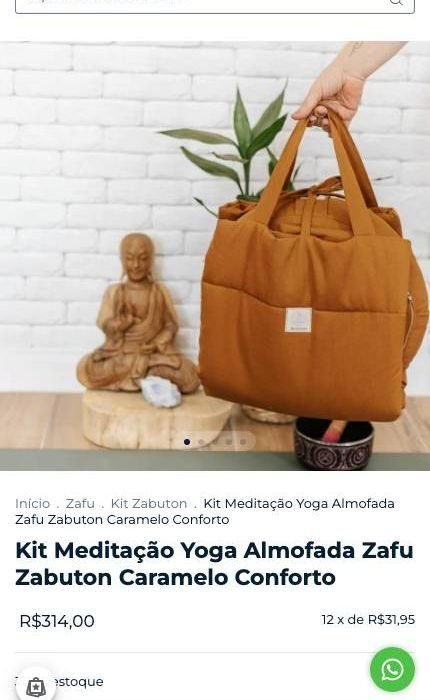
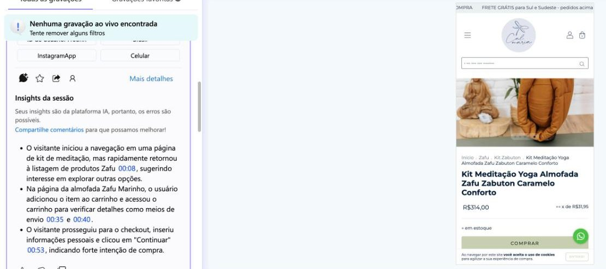
As pessoas que colocaram um produto no carrinho e não compraram saíram logo depois de calcular o frete. Na gravação abaixo, a pessoa veio do Google, colocou o Zafu Meia Lua (R$164) no carrinho, digitou o CEP, viu o frete de R$19,92 e saiu da loja em seguida, sem continuar a compra.
Para a Av. Paulista, em São Paulo, o frete mais barato desse mesmo produto é R$19,24, cerca de 12% do valor da almofada. O frete grátis começa em R$299 (Sul e Sudeste), então um zafu sozinho fica R$135 abaixo. Ao abrir "ver mais opções" aparecem 8 alternativas, com o SEDEX repetido em dois preços diferentes.
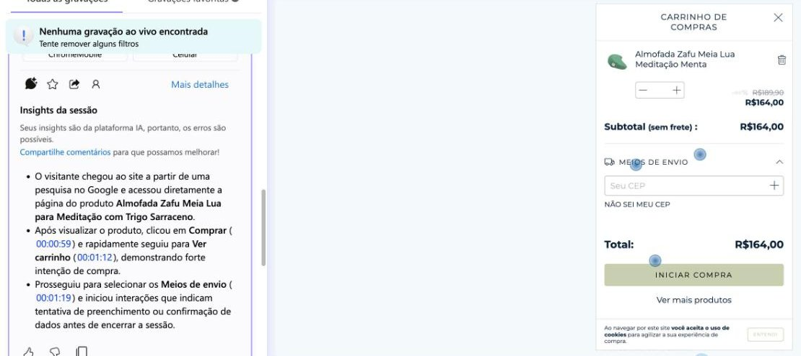
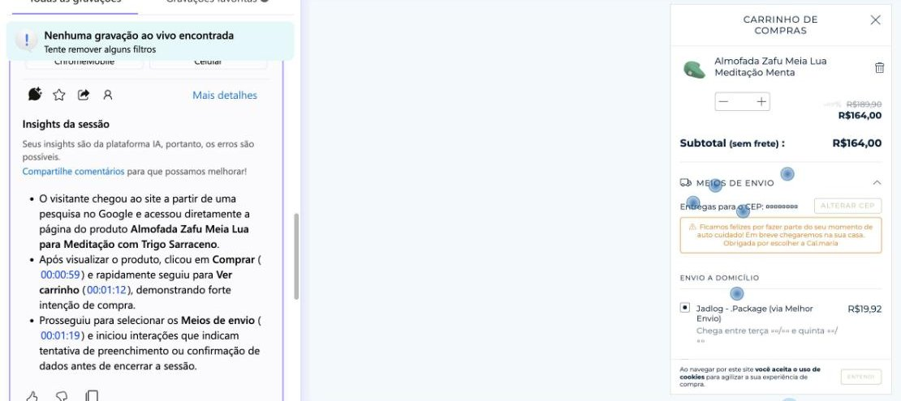
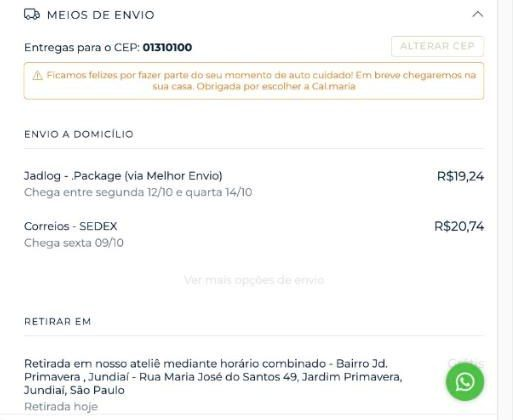
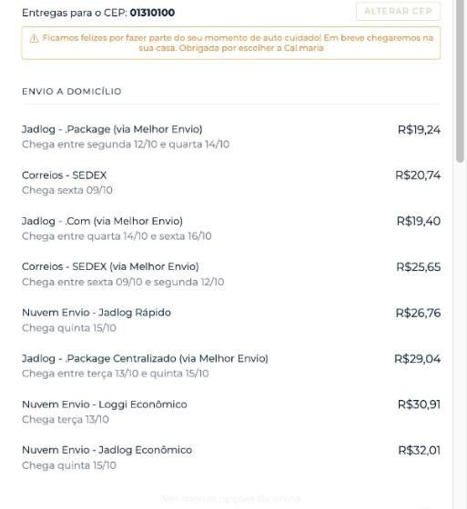
O que precisamos de você
Fazemos tudo pelo painel da Nuvemshop, sem custo e sem tirar a loja do ar. Qualquer item pode ser desfeito a qualquer momento.
E uma decisão que é sua
O frete. Vale conversarmos sobre duas coisas: deixar só 2 ou 3 opções de entrega (hoje são 8) e, se fizer sentido para a sua margem, baixar o valor mínimo do frete grátis (hoje R$299) ou ter um frete fixo para o Sul e o Sudeste. Isso mexe no seu custo, então só seguimos com o seu aval.
Como lemos: comportamento (rolagem, toques e gravações) vem do Microsoft Clarity, de forma anônima e sem nenhum dado pessoal. Números de visitas e compras vêm do Google Analytics da loja. Alguns prints do Clarity aparecem com palavras traduzidas automaticamente pelo navegador (por exemplo, "Clareza" em vez de "Clarity"). O frete foi simulado na própria loja em 08/10/2026.